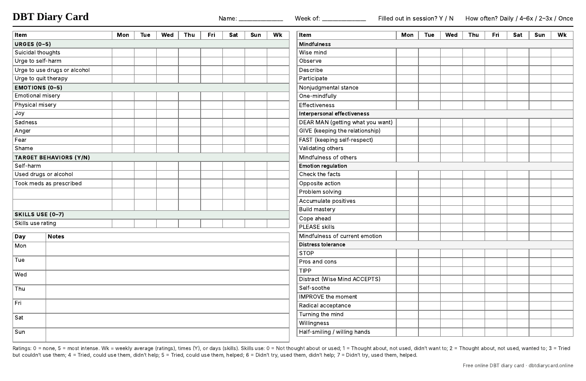

Free · Blank PDF · Letter or A4
Printable DBT diary card.
A free, one-page blank DBT diary card you can print and fill in by hand. It has rows for urges, emotions and target behaviors, a 0–7 skills-use rating, daily notes, and a checklist of 30 skills from all four DBT modules.
One landscape page · no sign-up · free to print and copy for personal or clinical use

Your therapist's version
Need different rows? Make your own template
Every DBT program tracks slightly different urges, emotions and behaviors. To print a blank card that matches yours:
- Open the free online DBT diary card.
- Open Customize rows. Rename, remove or add urges, emotions and target behaviors, pick a Monday or Sunday start, and turn the skills checklist off if you don't use it.
- Select Print blank card. Choose your printer, or Save as PDF to keep your own template.
Your custom rows are remembered in that browser, so next week you only need to print again. You can also skip paper and fill the card in online, then print the completed week for your session.
The template
What's on this DBT diary card template
- Header: name, week of, whether you filled it out in session, and how often you filled it out (daily, 4–6 times, 2–3 times or once).
- Urges (0–5): suicidal thoughts, urge to self-harm, urge to use drugs or alcohol, urge to quit therapy.
- Emotions (0–5): emotional misery, physical misery, joy, sadness, anger, fear and shame.
- Target behaviors (Y/N): self-harm, used drugs or alcohol, took meds as prescribed, plus two blank rows for your own targets.
- Skills use (0–7): one rating per day for how you used skills.
- Notes: a line for each day.
- Skills checklist: 30 skills across mindfulness, interpersonal effectiveness, emotion regulation and distress tolerance. See the full DBT skills list.
The scales are printed at the bottom of the card. For what each number means, see the 0–5 and 0–7 scales. If your therapist defines them differently, go with their version.
Using it
How to fill out a paper diary card
- Fill it in every day, ideally at the same time, such as before bed. Recording from memory at the end of the week loses detail.
- Rate the strongest point of the day for each urge and emotion, from 0 (none) to 5 (most intense).
- Mark each target behavior Y if it happened that day and N if it didn't.
- Tick the skills you practiced and give the day a 0–7 skills-use rating.
- Bring it to your session. Your therapist uses it to decide what to work on first.
Read the full guide: How to fill out a DBT diary card →
Printing tips
- Print at 100% scale (or Actual size) in landscape so the whole week fits on one page.
- Print a few weeks at once and keep them in a folder with your skills handouts.
- If you lose paper cards easily, the online card or the app may be easier to keep up with.
Forget the paper card at home?
The DBT Diary Card app for iPhone and iPad reminds you to fill it in, locks with Face ID, and exports a PDF for your session.
Questions
Printable diary card questions
Is this printable DBT diary card free?
Yes. Download, print and copy it as often as you like. There's no sign-up.
Can therapists and DBT groups use it?
Yes, you're welcome to print it for clients or groups. If your program uses different targets, make a custom version with the online card and Print blank card.
Should I use Letter or A4?
Use US Letter in the US and Canada, and A4 almost everywhere else. Both versions fit the card on one landscape page.
Can I fill it in on my computer instead?
Yes. The free online DBT diary card has the same layout, saves your entries in your browser, and prints a completed card or a PDF when you're done.
Does this replace therapy or a crisis service?
No. It is a self-tracking tool. If you are in danger or might act on urges to hurt yourself, call or text 988 in the US, or contact local emergency services.
Card layout based on the standard DBT diary card format. See University of Washington Behavioral Research & Therapy Clinics and Linehan, M. M. (2015), DBT Skills Training Manual (2nd ed.). This page is general education, not medical advice.
Prefer typing to paper?
Fill it in online, free.
Same card, saved on your device, ready to print for your session.
Open the online diary card